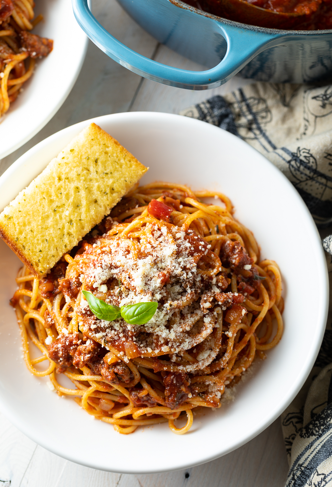

Wedding Spaghetti Sauce

The juiciest, most rich and aromatic spaghetti sauce your taste buds will
ever get to taste!
Ingredients
- 1/2 cup butter
- 3 tablespoons olive oil
- 1 large onion, chopped
- 3 cloves garlic, chopped
- 1 pound ground beef
- 1 pound mild sausage
- 4 teaspoons Italian seasoning
- 2 teaspoons salt (optional)
- 2 teaspoons dried rosemary
- 1 1/2 teaspoons dried oregano
- 1/2 teaspoon ground black pepper
- 76 fluid ounces water
- 1 (29) can tomato puree
- 3 (6 ounce) cans tomato paste
Steps
Step 1
- Heat butter and olive oil together with onion and garlic in a large pot over medium heat;
cook and stir ground beef and sausage in the onion mixture until browned and crumbly,
10 to 15 minutes. Stir Italian seasoning, salt, rosemary, oregano, and black pepper into
ground beef-sausage micture; simmer for 20 minutes.
Step 2
- Pour water, tomato puree, and tomato paste into ground beef-sausage mixture;
simmer, stirring occasionally, over low heat until flavors have combined, at least 2 hours.